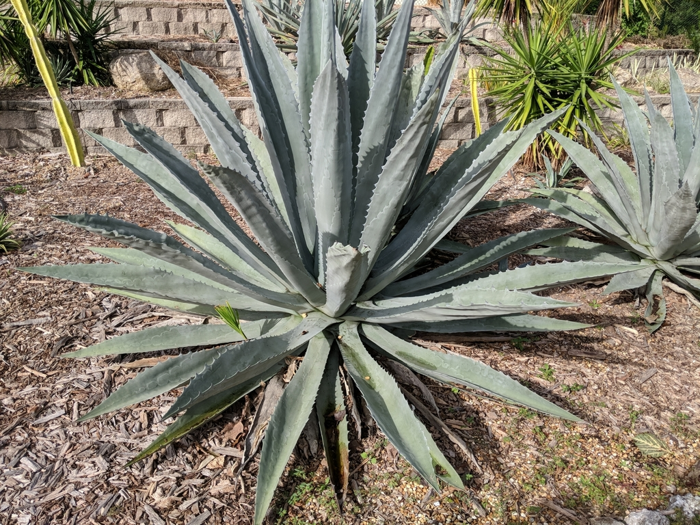

Native to Mexico and the southwestern United States, where it grows in arid, rocky, well-drained ground. One of the most widely cultivated succulents in the world and naturalized across every warm continent.
In its native Mexico and the southwestern US, the Century Plant is a keystone resource for nectar-feeding bats — including the migratory lesser long-nosed bat, which times its journeys to agave bloom and can pollinate dozens of plants in a single night. The towering stalk's thousands of nectar-rich, night-opening flowers also feed bees, hawk moths, hummingbirds, and other birds. In Florida, well outside its bat range, the bloom is still a major nectar event for bees and butterflies. The dense, spiny rosette offers protected shelter for lizards and small creatures, and even the standing dead stalk becomes a perch and a nesting and foraging site for insects and birds.
Monocarpic — flowers a single time at the end of its life, then dies. Reproduces by seed and, more reliably, by pups (offsets) that sprout from the base and continue the colony after the parent dies.
After 10 to 30 years, the plant sends up an enormous flowering stalk that emerges looking like a giant asparagus spear, then grows as much as a foot per day, reaching 20 to 25 feet, branching near the top and bearing thousands of yellow flowers.
Six-petaled, yellow, rich in nectar, opening at night; bat-pollinated in the native range, with bees, moths, and birds also visiting.
Thick, succulent, gray-green to blue-green, 3 to 6 feet long, arranged in a massive rosette. Margins lined with hooked teeth and tipped with a single sharp, rigid terminal spine that can pierce deeply.
Clonal offsets around the base — the plant's continuation after the bloom.
Here, compare the three life stages directly. A young plant is a tight rosette of spine-edged blue-green blades with no stalk. A plant just starting to bloom pushes up what looks like a colossal asparagus spear; a fully flowering one carries the giant branched stalk overhead — look (carefully) for bees working it. The dead plant is browned top to bottom with the bare stalk still standing — and look at its base for the next generation of pups already coming up. Respect the leaf tips: the terminal spine is genuinely dangerous.
PARK CONTEXT: The cactus garden intentionally displays all three life-cycle phases at once — young pre-bloom rosettes, a living plant with the large flowering stalk, and a fully dead browned specimen with the spent stalk standing. Strong interpretive teaching opportunity for monocarpic life cycles. Note the pups at the base of the dead plant as the cycle's continuation.
Caution. The rigid terminal spine causes serious puncture injuries and the leaf margins are toothed. The raw sap contains calcium oxalate crystals and saponins that irritate skin, and can cause phototoxic dermatitis — skin contact followed by sunlight may bring on rash and blistering. Wear long sleeves and gloves when working near it.